Okay, so it wasn't really that dramatic. My wonderful Starhub roaming plan was sucking my phone battery dry and internet was as about as fast as me getting to class in the morning, so I didn't even know about the bombings until I was tucked away in floral grandma blankets at night. My ignorance of the big picture horrors probably exacerbated romantic attachments to a few good things, but they're all I have now. I tell, through tinted glasses, stories that became my favourite in Southeast Asia.
The adventure begins like most do: trying not to lose all money on day 1. Indonesia is a dangerous destination for a small woman, as there are countless suitors hollering "hello miss" and they will so smoothly sweep your bags out of your hands for a few minutes and demand inflated fees afterwards. Best to smile awkwardly as you convince them you are a strong and sturdy youth, and continue pushing the overweight companion yourself.
With no other clueless tourist at the terminal or on the bus, I was starting to worry, and so followed the age-old advice of talking to a stranger. Yes, I read reviews of travellers forced to pay more, and I used my new friend to secure my $3 bus ticket. Ulterior motive aside, I was chuffed to meet a man who claims to speak no English but goes on to describe marriage precisely as a "traumatic experience". When I first saw him, I thought he should be typecasted as a teacher because of the Miss Honey vibes. I learned that he was a science teacher, raising a 19 year old son alone, and travels 6 hours return each day to the Institut Teknologi in Surabaya to attend his Biology lectures. He dreams of visiting Finland, the home of his professor, and gave a thumbs up to New Zealand education.
I was sitting with the Messiah, and outside next to a papaya tree growing from a hole, was a man pissing on the wall.
If you Google search Cemoro Lawang, Wikipedia tells you it is the small hamlet north-east of Mount Bromo, but before that, you'll probably see the first search result, a TripAdvisor review reading "Not meant for sleep. Skip all hotels in Cemoro Lawang". When you don't have private transport, skipping is no option. So I braced myself, and didn't die when the homestay only looked as bad as my grandparent's old house in Vietnam. Except with no soap (internal screaming). I grew up poor, and Cemoro Lawang was my cup of teh.
All shops, except for the little family cafe, warungs, were closed at night. The summer daytime was warm, around 23C and not too hot to sleep in. The afternoons bring you out on the porch, casually discussing your spirituality while watching neighbourhood pets bask in warmth, and waving at bikes selling beanies. The temperature falls with the sun, and you can walk over to the larger inns and snap the sunset over Bromo and catch the local men's ciggie-time gossip. If you're white, they might ask for a photo, because exoticism is always in. It gets dark, so duck out of the blue into one of the many warungs and wrap your hands around a ginger tea, wedang jahe. My favourite place to eat was in the little blue house opposite Yog Bromo Homestay, where I stayed. Slip into a jacket, because the outside table is the cutest, and try a nasi campur while the kitten circles your legs. Before a hot shower (if you're privileged) and retreating into a hole of blankets, walk through the main road, past the houses. The street lights have disappeared here and you can barely recognise the corn you saw in the daytime. Look up and see a beautiful night sky, untouched by beloved light pollution.
I had never seen so many stars, and though 2200 metres is a relative zero to light years, they only seem just out of reach. It was... AS MAGICAL AS THE SWAN CONSTELLATION IN BARBIE SWAN LAKE.
I fashioned my Bromo itinerary following Be My Travel Muse's blog post, and though she has since removed the photo of her cheekily sitting by the crater barrier (boo), I was inspired to dress it up retro for the steamy times.
After a sleep-in and late brunch, I was desperate for a hat, and so hit up the corner shop and talked to the NPC. My Persuasion level was unconvincing, and I paid the full fiver for a hat. He then asked me when I was going to the crater, and instead of telling me to go later when it would be less windy, he sold me a mask. I was oblivious and grateful, and maturely decided on Masha over Hello Kitty.
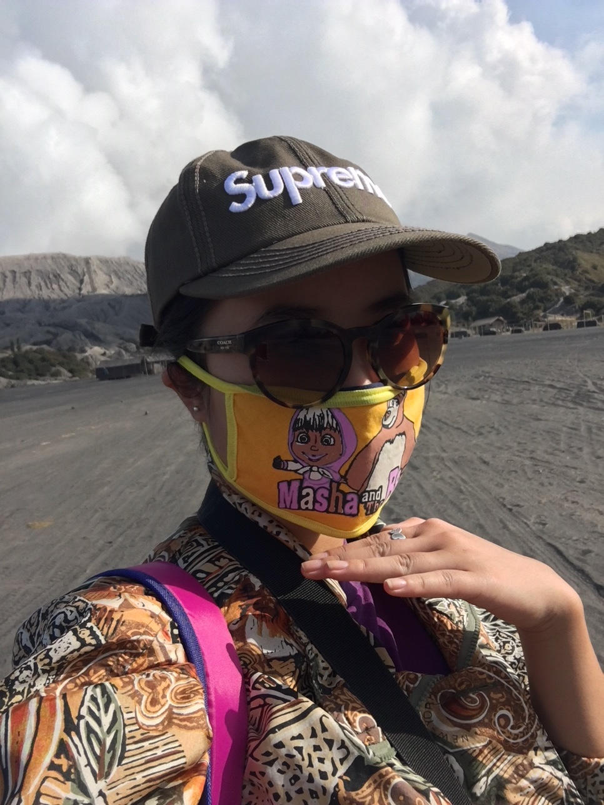I stood over the edge for a while in self-doubt, and asked the same man twice whether he was sure that the little dirt path lead to the crater. I was just in disbelief that I couldn't see anyone walking down the the sand sea. And as always, when suspicious of imminent death, I go ahead, telling myself: at least I have travel insurance and mum won't have to pay to have my body sent home.
It proved a windy pilgrimage, with howling and sighing, followed by the white gusts of sand. Each time the air around me whistled, I turned my back against the rush and held my breath. A little isolation anxiety, the struggle to breathe, coupled with vast white sand, mountains, and the solitary temple with geometric architechure before me, an adventure was built.
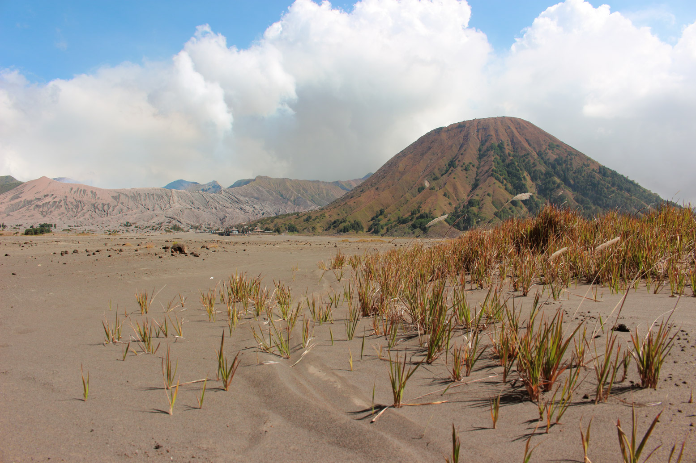Obviously dehydrated and with sand in my eyes, I dreamt up the old times when I was 12 and played FFXII everyday after school until a glitch 2/3 through the game broke it, along with my heart, and I never looked back until this moment. In a absurd outfit, and getting sand slapped, I was really to join Vaan and Penelope in the Dalmascan Estersand, imagining brave things in my heart and looping Bartók's Mărunțel from the No.6 Romanian dance as my desert backtrack.
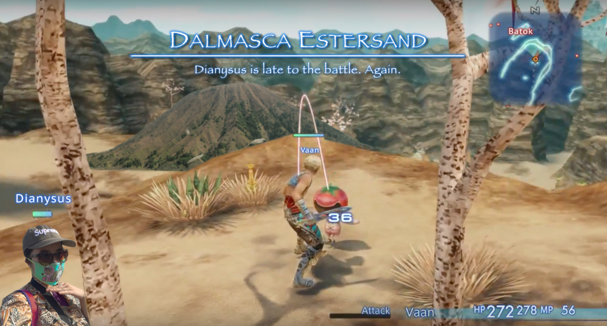I rejoined civilization at Bromo base camp, and followed my nose towards that sulphuric egg smell.
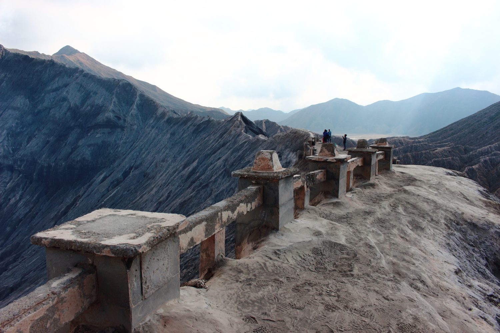 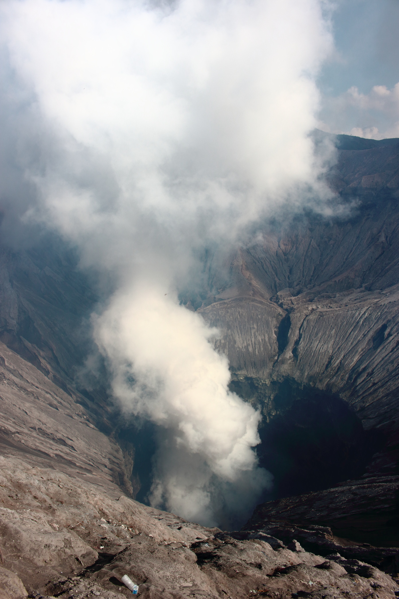Everyone around was mostly local, and all sitting around the viewpoint. According to my irrelevant and non-authentic views, this is not the way to do it. I took 15 minutes to view the crater mouth from all angles and see the pano view with Mt Batok and the Sand Sea. But then, to avoid fumes and getting in other people's selfies, you should take stops along the walk down, where you're close up against the ash-covered sides and marvel at how alien it looks. See the textures of the giants up close: brittle ridges of Bromo zigzaging against each other, and the layers seem to melt from the spine, yet break off into cracks nesting green shrubs, to finally meet the green folds of Batok at the dip.
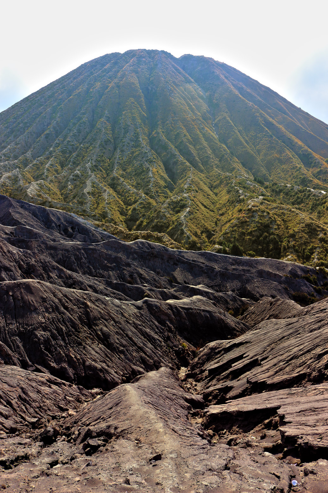 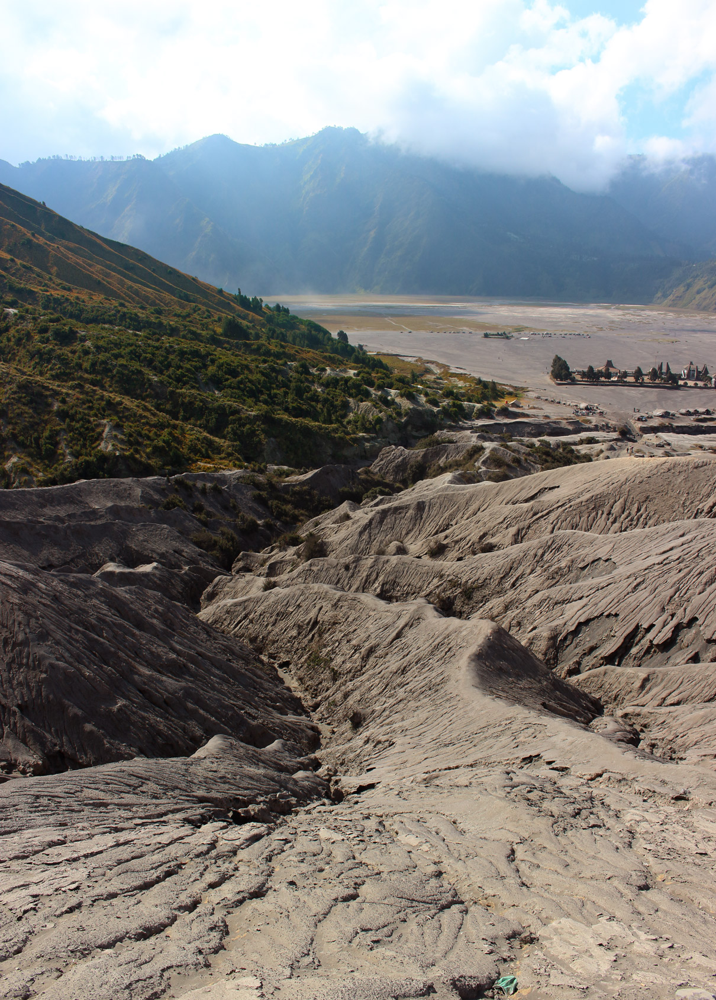 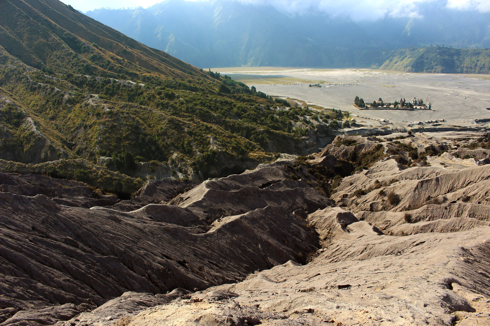The next morning, I rise and shine to headlights into the 3:30 morning. We set out into the darkness, and my company tells me that all the lights are kept on in the houses, even though people are sleeping, to ward off ghosts. I would have been scared if it weren't for the steady stream of sunrise hunters and Jeeps honking past us. We make it past the second viewpoint on Mt Penanjakan and climb up the dirt path. It was steep and rocky, and luckily in the dark, for once I saw in the daylight that next to the tall grass lining the path was the open air of certain death, climbing down was a HELL NO.
As I shivered in regret of having no warm clothes, light broke.
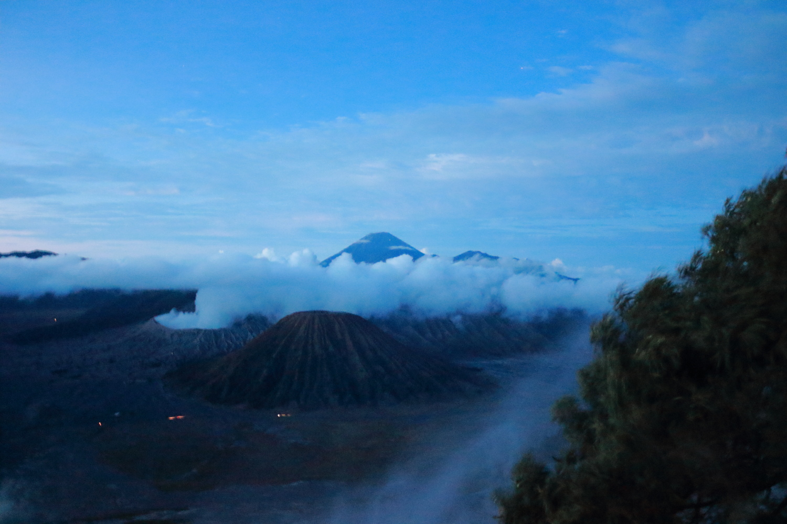I noticed that the fog has risen high today, and disappointly, the pond of clouds lapping at Cemoro Lawang from all the Google photos was missing.
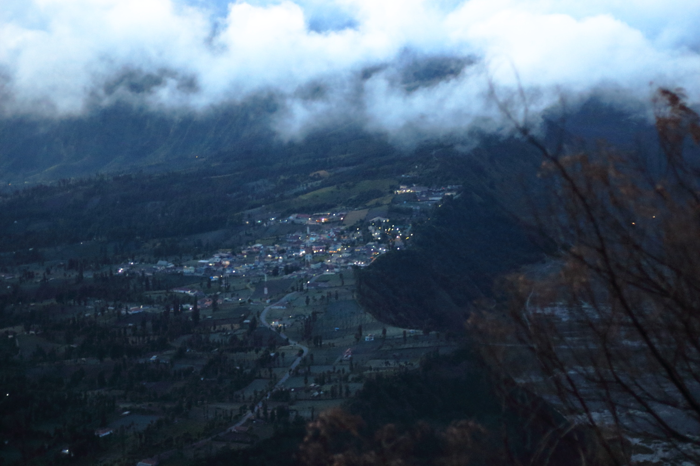And of course, since I only get up this early once a year, the wind threw a blanket over the whole thing in the next minutes.
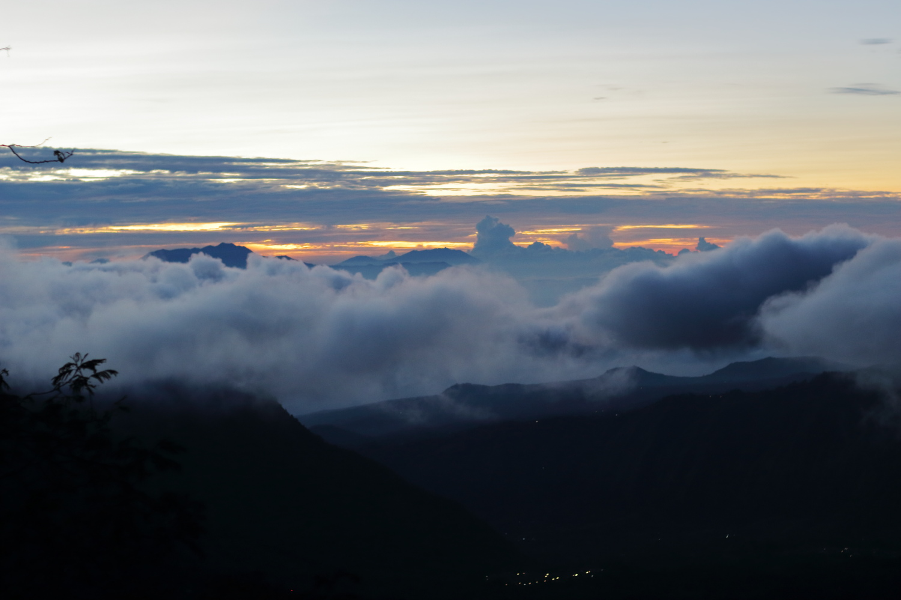We hopped onto motorbikes after a hot drink, and got a great view going down into the sand sea, as the clouds lifted. My spirits weren't too dampened, because after all it was still a great pilgrimage. I had become a deeply spiritual woman, and my return to the banal rituals of catching a flight on time proved testing. I had minibus troubles with lack of poor travellers in off-season, and the resulting delay induced a private 12 seat minibus hire to make the flight. 4 hours and $60 later, I made it to check-in with 10 minutes to spare.
And then the flight was delayed.
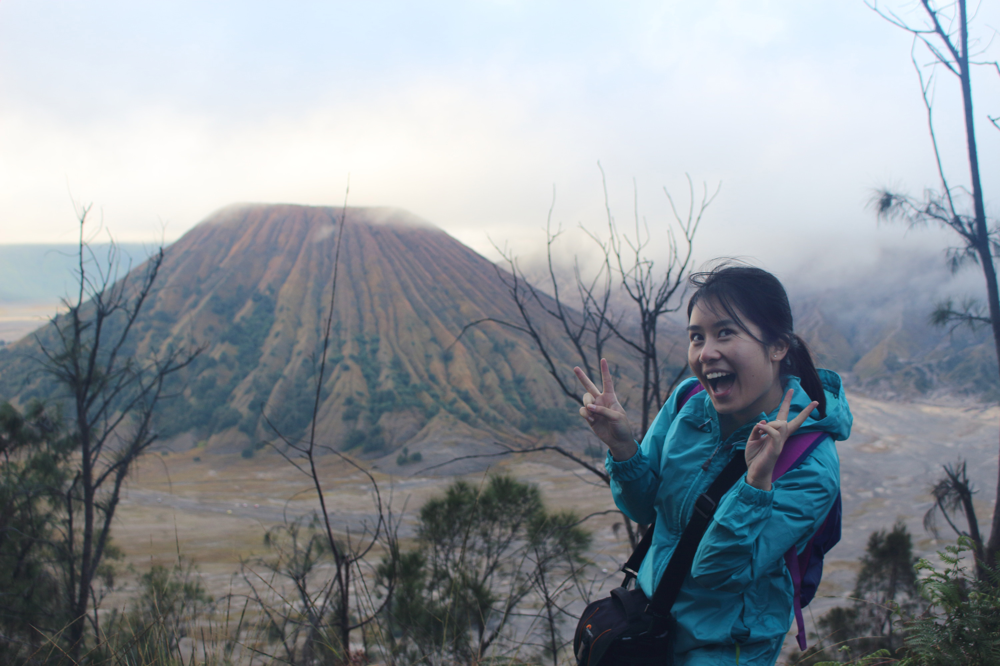